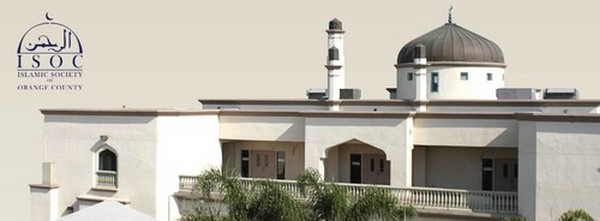

Dari Penggemar Heavy Metal Menjadi Pencinta Alquran
Yahiye Adam Godhan adalah anak seorang tukang daging yang banyak menyangsikan dan menentang dogma Kristen. Ia juga merasa heran melihat teman-temannya beribadah kepada Nabi Isa ‘alaihissalam. Di kemudian hari, ketika ia mulai mengenal Islam dan Alquran, ia mendapatkan alasan yang kuat mengapa harus menjadi seorang muslim.
Yahiye menceritakan kisah hidupnya sejak remaja hingga menemukan Islam sebagai jalan hidup yang hakiki. Ia bertutur:
Saat berusia 17 tahun, aku memiliki pengalaman yang sedikit berbeda dengan pengalaman-pengalaman remaja Amerika pada umumnya. Aku dibesarkan di sebuah peternakan kambing di tengah pedesaan, di Western Riverside County, California. Di peternakan keluarga itu, peternakan kami mampu menghasilkan susu, keju, dan daging dari 150 sampai 200 hewan yang kami miliki. Ayahku adalah seorang tukang daging yang menyembelih hewan-hewan pedagingnya dengan cara islami. Kemudian ia memasoknya ke toko makanan Islam yang terletak beberapa blok dari Islamic Center di pusat kota Los Angeles.
Ayahku dibesarkan sebagai seorang agnotis atau ateis, kemudian menjadi penganut Kristen karena tak sengaja mempelajari Injil yang ia temukan tertinggal di pantai. Ayahku punya beberapa teman yang beragama Islam, tapi saat ini, semua teman-teman muslimnya sudah pindah dari California. Sementara ibuku, sejak kecil dididik sebagai seorang Katolik namun ia memiliki prinsip yang sama dengan ayahku, sama-sama tidak mengimani konsep trinitas.
Aku dan saudara-saudaraku mengenyam pendidikan home schooling. Perlu diketahui, kebanyakan keluarga yang mengambil home schooling adalah orang-orang Kristen. Selama delapan tahun lebih, keluargaku berinteraksi dengan komunitas Kristen di home schooling ini. Namun, justru hal itulah yang mulai membuka mataku.
Aku mulai menemukan hal-hal yang kuanggap aneh, meskipun Kristen menyatakan bahwa mereka penganut trinitas, kenyataannya mereka hanya menujukan doa-doa mereka kepada Yesus. Menurutku hal itu benar-benar mengherankan. Orang-orang Kristen menganggap hal itu sebagai syarat untuk memperoleh keselamatan. Sejak saat itu, secara bertahap aku menyadari bahwa aku tidak bisa menjadi seorang penganut Kristen.
Selanjutnya, aku sangat terobsesi dengan aliran pemuja setan yang ada pada musik heavy metal. Dan tentu saja keluargaku sangat menentang keras hobi baruku ini. Mulailah kuhabiskan hari-hariku untuk terus mendalami musik ini; aku mulai menjalani hidup kotor dan jorok serta menjauhi kebersihan, kamarku kubiarkan begitu sangat berantakan dan kacau, dan hubungnku dengan orang tua mulai menegang, walaupun aku juga sering meminta maaf kepada mereka.
Di tahun berikutnya, aku mulai mendengar khotbah berapi-api di radio dari Kristen Apokaliptik, menceritakan tentang ancaman Islam. Namun peringatan mereka malah menimbulkan rasa ketertarikan di hatiku untuk mengetahui Islam lebih jauh. Aku anggap hal ini sebagai salah satu kegiatan untuk mengisi kekosongan.
Titik balik dari kesia-siaan yang aku lakukan adalah ketika pindah ke Santa Ana, California, tinggal bersama nenekku. Di California, aku berharap bisa mendapatkan pekerjaan. Tapi apa mau dikata, mencari pekerjaan itu sangat mudah diucapkan namun sulit untuk dilalui. Dan saat itulah aku mulai menemukan tempat-tempat diskusi Islam.
Disana, aku menemukan bahwa keyakinan dan praktik agama ini benar-benar sesuai dengan fitrah dan logika manusia. Islam mengajarkan bahwa Allah bukanlah bagian dari manusia, akan tetapi Dia sebagai Dzat yang terpisah dari manusia, esa tak berbilang. Islam memiliki kitab suci yang sangat mudah untuk dipahami sekalipun oleh orang awam. Tidak ada kepausan yang dianggap sempurna dalam hal penafsiran. Setiap muslim memiliki kebebasan menafsirkan Alquran dengan kesadaran akan kadar ilmu pengetahuan yang mereka miliki.
Muslim tidak meyakini bahwa semua orang ditakdirkan masuk neraka. Sehingga Tuhan tidak perlu mengorbankan dirinya disiksa di tiang salib untuk menebus dosa-dosa umat manusia. Muslim meyakini bahwa Allah Maha Penyayang dan Maha Pengampun, kecuali bagi mereka yang ingkar dan memang tidak mau bertaubat kepada-Nya. Muslim tidak percaya akan adanya ras terpilih, semua sama di mata Allah yang membedakannya hanyalah takwa. Dan masih banyak hal-hal lain.
Setelah mulai membaca terjemahan Alquran dalam bahasa Inggris, aku semakin yakin akan kebenaran dan keaslian ajaran Allah yang terkandung dalam 114 surat Alquran. Setelah bertahun-tahun bergaul dengan orang-orang Islam, aku tahu benar bahwa mereka bukanlah orang-orang yang haus darah, teroris, dan barbar, seperti yang digambarkan oleh media dan para aktivis Injil.
Bekal inilah yang membuatku semakin tertarik untuk mengetahui dan meneliti Islam lebih jauh, lebih dari yang orang lain ketahui. Karena aku belum bisa memutuskan dan memantabkan hati kalau Islam adalah benar-benar takdirku.
Islamic Society of Orange Country, California.
Sampai akhirnya, pencarian tersebut menemui titik temu. Menurutku, ini adalah proses yang sangat alami tanpa ada paksaan. Pada November 1995, aku mengunjungi komunitas Islam di California, Islamic Society of Orange County, di Garden Grove. Aku katakan kepada salah seorang saudara muslim yang mengurus perpustakaan di sana, bahwa aku ingin memeluk Islam. Lalu dia memberiku beberapa bahan bacaan, dan kemudian aku mengucapkan syahadat di dalam masjid yang penuh sesak.
Minggu berikutnya, kuhabiskan untuk mempelajari tata cara shalat dan merenungkan kebesaran Allah. Menjadi seorang muslim benar-benar sesuatu yang sangat luar biasa!